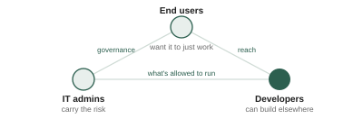

What makes a developer bet their roadmap on someone else's platform?
Mixed-methods research across a three-sided ecosystem — end users, IT admins, and third-party developers — plus the measurement program that tracked whether any of it was working.
Three audiences, three sets of incentives
A platform is not one product with one user. End users install apps and want them to work. IT admins decide what's allowed to run inside the organization and carry the risk when it goes wrong. Third-party developers decide whether the platform is worth building on at all, and they have somewhere else to go. Product bets that delight one of these groups routinely break trust with another, so the research had to hold all three at once instead of optimizing for whoever was loudest in the roadmap meeting.

Why developers build where they build
I ran this in two passes: a survey of 146 developers across competing chat platforms to establish the shape of the decision, then 19 in-depth interviews to understand the reasoning underneath it.
The finding that changed strategy was that "developer" is not one audience either. Developers building public, commercially distributed apps chose platforms on market value and reach — how many customers they could get to, and whether a partnership unlocked revenue. Developers building private, internal apps barely cared about reach; they chose on documentation quality and platform reliability, because their cost is engineering time and their risk is silent breakage.
Dissatisfaction clustered in three places, and none of them were the API surface itself: gaps against competing platforms' feature parity, documentation that was hard to act on — especially around authentication and configuration — and constrained UI components that limited what an app could look like once built.
What end users and admins hit
Observational research on the install journey found people leaving the product entirely and using web search to find the app directory, because the entry points inside the product weren't discoverable. Once someone found any entry point, they reused it forever, which made the journey feel easy in retrospect and hid the problem from everyone measuring downstream.
People also searched rather than browsed, and searched by the problem they were trying to solve rather than by app name — which the catalog wasn't built to answer. For admins, search quality was the top pain as well, followed by concerns about app quality and cost exposure. Three different audiences, converging on the same broken step.
Building the measurement layer
Insight without measurement doesn't survive a reorg. Alongside the foundational work I built and scaled the platform's developer satisfaction benchmarking — a standardized instrument applied consistently across APIs so scores were comparable across products and over time, growing coverage from a handful of APIs to the platform's full surface area, a 560% increase, and establishing shared goals between the technical writing and developer relations organizations that had previously had no common measure to argue from.
The same discipline applied on the infrastructure side, where I ran multi-year satisfaction tracking on internal developer tooling with longitudinal significance testing, so the team could distinguish real movement from noise rather than reading quarterly wobble as progress. On one high-scale storage service, two rounds of iterative usability research moved task success on the critical journeys by 37 percentage points and lifted user sentiment 8 points, which is what cleared the bar for general availability.
Reflection
Platform research is rarely about a screen. It's about whether a set of incentives line up well enough that three groups of people, who never meet, keep choosing to participate. The frameworks I built mattered less as research artifacts than as shared language — a way for PMs, engineers, and external partners to argue about the same thing instead of past each other.